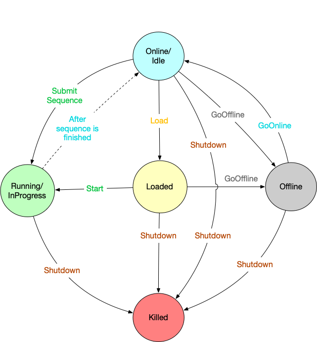

Sequencer Technical Documentation
Sequencer is OMOA component which has responsibility of executing Sequence of Steps. In an observation, Sequencers will form a hierarchy where with a top-level ESW Sequencer sending Sequences to downstream Sequencers and downstream Sequencers sending commands to Assemblies/HCDs.
The Sequencer implementation has two main parts:
- Sequencer Framework
- Scripting Support
Sequencer Framework uses an Akka Actor at a core and is responsible for executing the received Sequence and calling handlers in the Script. Sequencer Scripting Support defines behaviour of Sequencer while executing Sequence. Scripts are written using Domain Specific Language provided as a part of Framework.
Modules
-
esw-ocs-api - This is cross-compiled module, which is compiled into JVM as well as JavaScript code. This module includes
SequencerApiwhich defines an interface for Sequencer. This module also consists of core models, actor client, JVM and JavaScript client for Sequencer. -
esw-ocs-impl - This module consists of the core implementation of Sequencer the actor which is
SequencerBehaviour(Sequencer Actor), Engine and SequencerData. -
esw-ocs-app - This module consists of wiring as well as cli application to start Sequencer. The wiring integrates Sequencer into the rest of the ESW/CSW environment.
-
esw-ocs-dsl - This module consists of Scala implementation supporting the Script DSL.
-
esw-ocs-dsl-kt - This module consists of Kotlin counterpart of the Script DSL.
-
esw-ocs-handler - This handler module is responsible for providing HTTP routes for Sequencer HTTP server. Sequencer provides an HTTP and Akka interface. The HTTP routes are defined and implemented here.
Implementation Details
Sequencer framework uses Akka Actor as core implementation (Sequencer Actor). The following figure explains the architecture of the Sequencer framework. Sequencer is registered with Location Service. The future SOSS Planning Tool or ESW.HCMS Script Monitoring Tool will use the Location of the top-level Sequencer returned by Sequence Manager to resolve the top-level Sequencer, and will send the Observation’s Sequence to top-level Sequencer.
The Sequence execution process can be broadly described as below.
- Starting a Sequence
- Sequencer wiring creates an execution Engine which is responsible for processing each step. When Engine is initialized, Kotlin Script is loaded into it via reflection. After initialization, Sequencer’s Akka and HTTP connection is registered to Location Service. NOTE: Engine is a continuous running loop, it pulls next step once current step is finished.
- Loading and Running a sequence in Sequencer
-
During initialization of Sequencer, it is set to IDLE state and initialized with empty data in Sequence Data like empty Step List,etc.
Sequence Data has different fields as follows:
stepList - This will store steps of the Sequence
runId - This is runId of Sequence
sequenceResponseSubscribers - This is a list of Subscribers who is interested in response either via submitting a sequence or querying response.- For first use case when subscriber has submitted the sequence, it uses submitAndWait API and gets response once Sequence is completed with Success/Failure
- For second use case, other Subscribers(who has not submitted the sequence) can also get response using queryFinal API, for this they need to provide runId of Sequence
Load a sequenceorSubmit a sequence, in both cases list of commands will be converted to richer model of list of Steps. -
Load a Sequence
- Here, Sequence Data(described above) will be initialized with Sequence Steps. Once initialized, user can give startSequence command to start the execution of steps.
- Submit a Sequence
- Sequence Data will be initialized with Sequence Steps, and it will also start the sequence execution.
Execution of a single Step Engine pulls one step at a time, and it is executed using command handler in the script. Command handler is selected based upon type and name of command present in Step.
- Completion of a Sequence
Once every step is executed, it is marked as Finished with Success or Failure. If any of step is Failed, Sequence is terminated and Error response is sent to all Subscribers. If all steps are completed with Success, then Success response is sent to all Subscribers.
Engine and Sequencer Actor are core parts of Framework. The framework part is the same for every Sequencer, but the Script can vary. The Script defines the behaviour of the Sequencer for each step within a Sequence.
The following sections explain the core components of Sequencer:
- Sequencer Lifecycle
- Scripting Support
Sequencer Lifecycle
The Sequencer lifecycle is implemented as a fairly complicated finite state machine as shown in the figure below. This Section explains the different states and messages accepted in each respective state of Sequencer. At any given time a Sequencer is in exactly one of these states. The state of the Sequencer is tied to whether or not it has received a Sequence and whether or not the Sequence has started executing. Sequencer supports a set of commands/messages, and on receiving those commands, it takes an action and transitions to other states.
Following are the states supported by the Sequencer:
-
Idle/Online: This is the default state of the Sequencer. A Sequencer is idle when it is starts up. It has a Script since it has been loaded/created by the Sequence Component, but there is no Sequence under execution. A Sequencer can come to the idle state from the following situations:
-
when the Sequencer starts up for the first time with a Script loaded
- when the Sequencer has finished execution of a Sequence
- when the Sequencer was offline, and a goOnline command is received
In this state, the Sequencer can only receive a Sequence, goOffline, or shutdown, in which the Sequencer transitions to the Loaded, Offline, and Killed states, respectively.
-
Loaded: A Sequencer is in loaded state when a Sequence is received and ready for execution, but execution of the Sequence hasn’t started. A separate
startcommand is expected to start execution of the Sequence. All sequence editor actions (for e.g. add, remove, reset) are accepted in this state. From this state, the Sequencer can go to theRunningstate on receiving astartcommand, or it could go to theOfflinestate ifgoOfflinecommand is sent. On receiving aresetcommand, which discards all the pending steps, the Sequencer will go toIdlestate. -
InProgress/Running: The Sequencer is in the
Runningstate only when it is executing a Sequence. All sequence editor actions (for e.g. add, remove, reset) are accepted in this state. From theRunningstate, the Sequencer can go toIdlestate on completion of a Sequence, or it can beshutdown. A Sequencer cannot goOfflinefrom this state; the Sequencer must first to go to theIdlestate and thenOffline. -
Offline: The Sequencer goes to the
Offlinestate only on receiving agoOfflinecommand, which can either come from an upstream Sequencer, or from a user through the admin dashboard. In this state, only a few commands are excepted (for eg. goOnline, shutdown, status etc). -
Killed: This is the final state of the Sequencer, achieved when receiving a
shutdowncommand. The shutdown command can be sent in any state, hence a Sequencer can transition to this state from any other state. However, a Sequencer doesn’t stay in this state long; when a Sequencer is killed, it is removed from the Location Service, and ActorSystem is shutdown, effectively destroying the Sequencer.

Scripting Support
Sequencer Scripts are the most important part of the Sequencer architecture. The scripting environment has following core requirements:
Domain Specific Language (DSL) constructs for writing Scripts. For example, par to execute commands in parallel, onSetup like constructs where the script writer will define logic to be executed when Setup steps are processed. Kotlin has been used to create the DSL for writing a Script. Kotlin has excellent language support for writing an embedded DSL. Kotlin also has excellent support for asynchronous processing/tasks that allows a more script-like syntax for the kinds of things ESW Scripts need to do.
Mutable State within the script To handle mutable state in thread safe manner, Script is implemented using the Active Object Pattern. Every operation in a Script needs to be asynchronous and non-blocking in nature, and each operation will be scheduled on Single Threaded Execution Context (StrandEC). This ensures that state inside the Script can be accessed/modified at any place inside with the guarantee of thread safety. If there is need to have CPU intensive or blocking operations in Script, patterns supporting these needs to be followed which uses another Execution Context so that Script StrandEC is not blocked. The scripting DSL provides special constructs for background processing.
Scripting Support is implemented using Kotlin. onSetup and onObserve handlers are provided which will be used by script writers to write behaviour when Setup and Observe commands are received. Specific onSetup handler will be picked based on command name specified in handler. For more details about scripting please refer here
Sequencer Interfaces
Sequencer exposes its interface in three ways:
- Akka interface - Sequencer is registered as an Akka-based component. One can resolve Sequencer and use the Akka client to interact with Sequencer.
- HTTP direct interface - Each Sequencer also exposes an HTTP-based interface as an embedded Sequencer Server (direct and unprotected usage). This access provides routes that allow user to directly control the Sequencer without any auth protection. UI applications are supposed to use Gateway interface described below to interact with Sequencer as Gateway provided auth protection layer.
- HTTP Gateway interface - It is also possible to interact with Sequencer using the UI Application Gateway (as outside network interface). Being outside network interface, this access requires user to be authenticated and authorized. The Gateway hosts the Sequencer API, which communicates with the Sequencer via the Akka interface. Please refer to the Gateway documentation for more information.
Following snippet shows instantiating Akka Interface to interact with Sequencer:
- Scala
-
private implicit val actorSystem: ActorSystem[SpawnProtocol.Command] = ActorSystemFactory.remote(SpawnProtocol(), "example") private val sequencerAkkaConnection: AkkaConnection = AkkaConnection(ComponentId(Prefix(ESW, "IRIS_DARKNIGHT"), Sequencer)) private val locationService: LocationService = HttpLocationServiceFactory.makeLocalClient(actorSystem) private val sequencerAkkaLocation: AkkaLocation = Await.result(locationService.resolve(sequencerAkkaConnection, 10.seconds), 10.seconds).get private val sequencer: SequencerApi = SequencerApiFactory.make(sequencerAkkaLocation)
Following snippet shows instantiating HTTP direct Interface to interact with Sequencer:
- Scala
-
private val sequencerHttpConnection: HttpConnection = HttpConnection(ComponentId(Prefix(ESW, "IRIS_DARKNIGHT"), Sequencer)) private val sequencerHttpLocation: HttpLocation = Await.result(locationService.resolve(sequencerHttpConnection, 10.seconds), 10.seconds).get private val sequencerHttpClient: SequencerApi = SequencerApiFactory.make(sequencerHttpLocation) sequencerHttpClient.getSequence
For interacting using HTTP Gateway interface, please refer here
Sequencer Http direct interface is not supposed to be used from anywhere as it is unprotected and also bind to inside network ip.
Interacting with Sequencer
One can use Akka Interface or HTTP Gateway interface to interact with Sequencer. APIs to interact with Sequencer are broadly categorised as following.
- Sequencer Command Service - Provided as a part of CSW. Provides way to submit sequence and receive response.
- Sequence Editor APIs - Provided as a part of ESW. Provided way to edit sequence submitted to Sequencer.
- Sequencer Lifecycle APIs - Provided as a part of ESW. Provided way to send lifecycle commands to Sequencer.
- Other APIs - Provided as a part of ESW.
Sequencer Command Service
Commands can be sent to Sequencer to submit sequence and response is received in return.
Sequencer Interface exposes APIs on top of Sequencer Command Service. Sequencer Command Service provides way to submit sequence to Sequencer and receive started or final response. Sequencer Command Service is provided as a part of CSW and details about using Sequencer Command Service can be found here.
Sequence Editor APIs
Sequence Editor APIs allow actions to edit sequence such as add more steps, delete/replace existing steps, Add/remove breakpoint in sequence. For using Sequence Editor actions, sequencer must be running a sequence. If Sequencer is not running any sequence then, Sequencer will return Unhandled response.
- add This API allows to add more steps to sequence. Steps will be added in the end of sequence.
- Scala
-
val stepsToAdd: List[SequenceCommand] = List( Setup(Prefix(ESW, "filter.wheel"), CommandName("setup-iris")), Setup(Prefix(ESW, "filter.wheel"), CommandName("setup-tcs")) ) sequencer.add(stepsToAdd)
- prepend This API allows to add more steps to sequence. Steps will be added after currently running step of sequence.
- Scala
-
val stepsToPrepend: List[SequenceCommand] = List( Setup(Prefix(ESW, "filter.wheel"), CommandName("setup-iris")), Setup(Prefix(ESW, "filter.wheel"), CommandName("setup-tcs")) ) sequencer.prepend(stepsToPrepend)
- getSequence This API allows returns Sequence running in Sequencer if any.
- replace This API allows to replace particular step in the sequence with more steps.
- Scala
-
val stepsToReplace: List[SequenceCommand] = List( Setup(Prefix(ESW, "filter.wheel"), CommandName("setup-iris")), Setup(Prefix(ESW, "filter.wheel"), CommandName("setup-tcs")) ) sequencer.replace(stepList.steps(4).id, stepsToReplace)
- insertAfter This API allows to insert more steps after particular step in the sequence.
- Scala
-
val stepsToInsertAfter: List[SequenceCommand] = List( Setup(Prefix(ESW, "filter.wheel"), CommandName("setup-iris")), Setup(Prefix(ESW, "filter.wheel"), CommandName("setup-tcs")) ) sequencer.insertAfter(stepList.steps(4).id, stepsToInsertAfter)
- delete This API allows to delete particular step in the sequence.
- add and remove breakpoint These APIs allows to add and remove breakpoint for particular step in the sequence.
- Scala
-
private val breakpointStep: Id = stepList.steps(4).id sequencer.addBreakpoint(breakpointStep) sequencer.removeBreakpoint(breakpointStep)
- reset These APIs allows to discard all pending steps in the sequence.
- pause and resume sequence These APIs allows to pause and resume sequence. This essentially adds/removes breakpoint at first pending step in sequence
Sequencer Lifecycle APIs
Sequencer Lifecycle APIs allow to send lifecycle commands to Sequencer such as goOnline, abortSequence etc.
Certain commands are restricted depending on state of Sequencer. For example, goOnline command is handled only when Sequencer is in Offline state. If goOnline is sent otherwise it will return Unhandled response with error msg. For details refer Sequencer Lifecycle Section
- isAvailable
This API allows to check if Sequencer is in Idle state or not. It returns true if Sequencer is in Idle state.
- online/offline
These APIs allow to send goOnline/goOffline mode commands to Sequencer. isOnline command returns true if Sequencer is online.
- abortSequence
This API allow to abort running sequence. This essentially discards pending steps from sequence and also call onAbortSequence handler written in script.
- Stop
This API allow to stop sequence. This essentially discards pending steps from sequence and also call onStop handler written in script.
- getSequencerState
Sequencer is implememted as state machine. It accepts/discards msgs based on Sequencer State. This API allow returns current sequencer state.
- diagnosticMode
This API allow to send diagnosticMode command to Sequencer. This calls onDiagnosticMode handler written in script
- operationsMode
This API allow to send operationsMode command to Sequencer. This calls onOperationsMode handler written in script
Other APIs
- loadSequence
This API allows to load sequence in Sequencer. Loaded Sequence does not start execution unless StartSequence Command is received. One can replace already loaded sequence by firing another loadSequence command.
- Scala
-
val sequence: Sequence = Sequence( Setup(Prefix(ESW, "filter.wheel"), CommandName("setup-iris")), Setup(Prefix(ESW, "filter.wheel"), CommandName("setup-tcs")) ) sequencer.loadSequence(sequence)
- startSequence
This API allows to start execution of previously loaded sequence in Sequencer. This return SubmitResponse which is Started in case of success.
- getSequenceComponent
This API allows to get location of Sequence Component running the Sequencer.
Running Sequencer
For running Sequencer Script, please refer this.